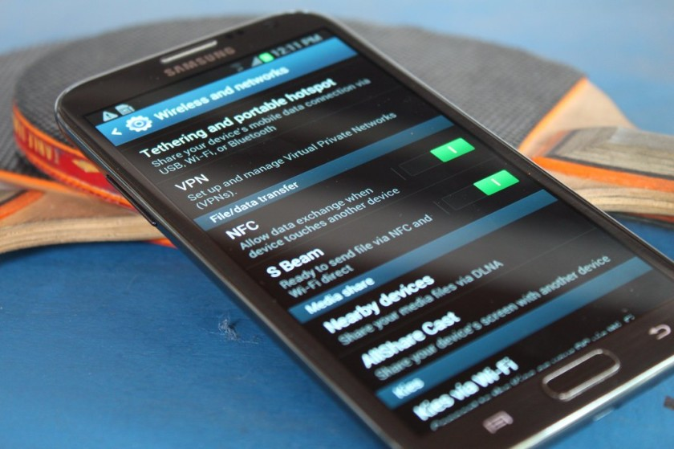

What is NFC
NFC is becoming pretty commonplace thanks to the growth of online payment systems like Samsung Pay and Android Pay. Especially when it comes to high-end devices and even many mid-rangers. You’ve likely heard the term before, but what is NFC exactly? In this piece we rundown what it is, how it works, and what it can be used for.

NFC stands for Near Field Communication and, as the name implies, it enables short range communication between compatible devices. This requires at least one transmitting device, and another to receive the signal. A range of devices can use the NFC standard and can be considered either passive or active, depending on how the device works.